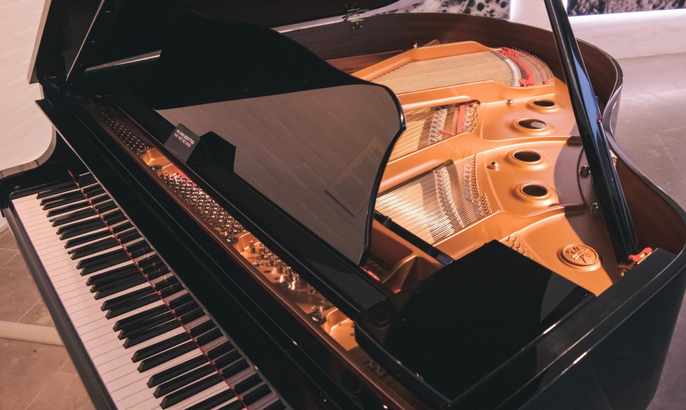

Un piano es un instrumento musical armónico y cordófono simple, catalogado como instrumento de teclado, el cual está formado por cuerdas percutidas combinado con cuerdas metálicas de diferente diámetro y longitud, las cuales están organizadas de mayor a menor en una caja de resonancia y una fila de teclas negras y blancas que, cuando son presionadas, accionan unos pequeños macillos o martinetes que chocan las cuerdas y las hacen sonar.
Bartolomeo Cristofori construyó a finales del siglo XVII un instrumento similar al clavicordio con una significativa evolución. Al hacer vibrar las cuerdas sobre una pieza de madera con forma de martillo se conseguía un sonido más dulce y sostenido que, además, se podía regular en volumen y tono, dependiendo de la fuerza con que se pulsaran las teclas. No hay datos verificados sobre su juventud pero, según una leyenda, era aprendiz del fabricante de violines Nicolò Amati. Lo que sí se conoce con certeza es que en 1688, con 33 años, comenzó a trabajar al servicio del príncipe Fernando de Medici, melómano y apasionado de la mecánica y las matemáticas. Allí pudo dar rienda suelta a su creatividad para trabajar sobre el desarrollo del piano.
La época de mayor apogeo para la música para piano fue el periodo que comprende desde la segunda mitad del siglo XVIII hasta finales del siglo XIX. El mayor legado de composiciones para piano a partir del periodo Clásico lo aportaron entre otros, compositores como Haydn, Mozart, Beethoven, Schubert, Chopin, Mendelssohn, Schumann, Brahms o Liszt.
Johannes Chrysostomus Wolfgangus Theophilus Mozarta (Salzburgo, 27 de enero de 1756-Viena, 5 de diciembre de 1791), más conocido como Wolfgang Amadeus Mozart, fue un compositor, pianista, director de orquesta y profesor del antiguo Arzobispado de Salzburgo (anteriormente parte del Sacro Imperio Romano Germánico, actualmente parte de Austria), maestro del Clasicismo, considerado como uno de los músicos más influyentes y destacados de la historia.
Ludwig van Beethovena (Bonn, Arzobispado de Colonia; 16 de diciembre de 1770b-Viena, 26 de marzo de 1827) fue un compositor, director de orquesta, pianista y profesor de piano alemán. Su legado musical abarca, cronológicamente, desde el Clasicismo hasta los inicios del Romanticismo. Es considerado uno de los compositores más importantes de la historia de la música y su legado ha influido de forma decisiva en la evolución posterior de este arte.
Johannes Brahms (Hamburgo, 7 de mayo de 1833-Viena, 3 de abril de 1897) fue un compositor, pianista y director de orquesta alemán del romanticismo, considerado el más clásico de los compositores de dicho periodo. Nacido en Hamburgo en una familia luterana, pasó gran parte de su vida profesional en Viena.